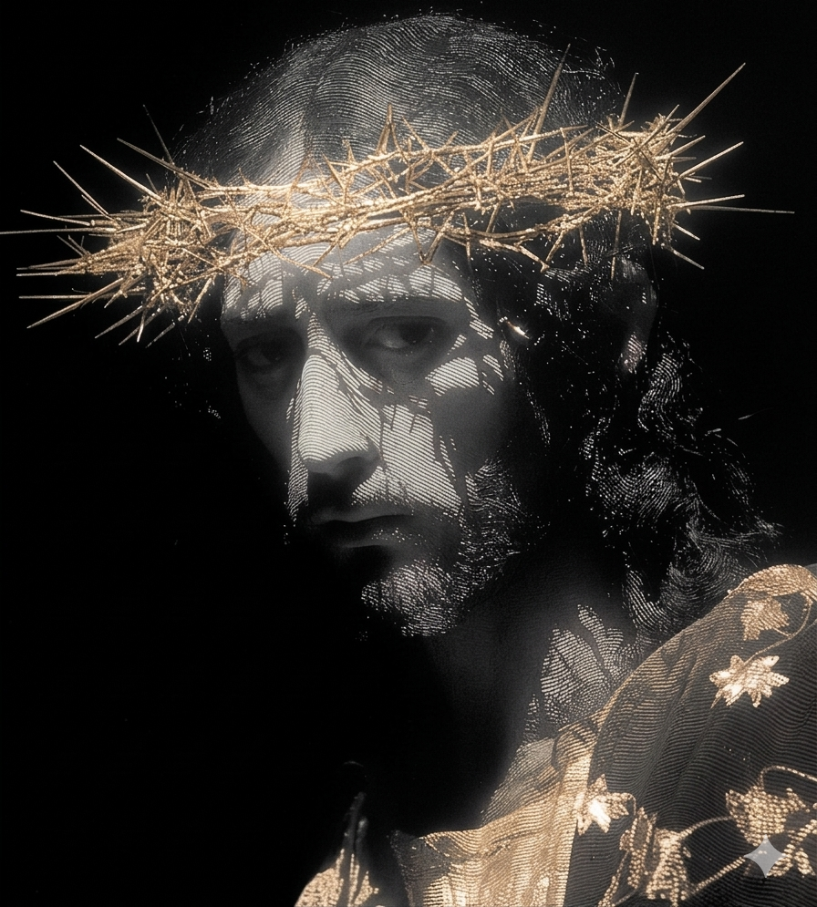
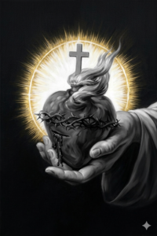

Textos fundados no Magistério da Igreja, nos Padre e Doutores.
Estudo sério para um fé autêntica e viva

Baseado no CIC nn. 1332-1429 e na Enciclica Ecclesia de Eucharistia de João Paulo II. A presença real de Cristo no sacramento do altar.
Pe. João Silva - 8 min leitura
Ler artigo ⮕Dogma definido po Pio IX em 1854. Teologia e história.
Diác. Marcos - 7 min
Ler ⮕Advendo, Natal, Quaresma, Páscoa e Tempo Comum.
Redação - 5 min
Ler ⮕A razão teológica e histórica para os sete sacramentos.
Pe. André Lima - 6 min
Ler ⮕Por que a Bíblia Católica tem 7 Livros a mais que a protestante.
Redação - 9 min
Ler ⮕Ética natural como fundamentos da Lei divina segundo Tomás de Aquino.
Pe. André Lima - 6 min
Ler ⮕Sacramentos - 12 min
Santos - 15 min
Mariologia - 8 min
